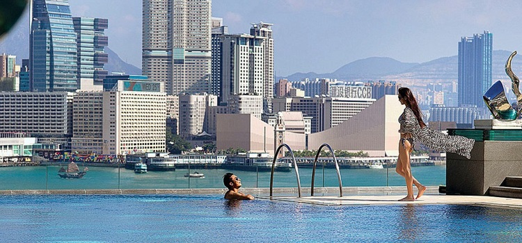

香港的住宿,分为酒店和宾馆,两个概念是完全不一样的。“酒店” 是基本上占有独立物业的旅店;在一个大厦里的某个单元或者某几个单 元的,一般称呼为“宾馆”;一个大厦可能也会有很多家宾馆。与内地 的房间比较,香港酒店房间的空间会显得更袖珍一点儿,价格也普遍比内地的贵。
对大陆自由行客人的住宿最有利用价值是香港地铁其中的5个站点，分别是位于九龙一侧弥敦道上的旺角、油麻地、佐敦、尖沙咀，以及位于香港岛的铜锣湾也可包括铜锣湾前后的金钟和天后站。这几个站点附近云集了香港众多购物点，也分布着不少廉价宾馆。
针对背包客,建议住在偏远的郊区,比如像大屿山昂平、西区摩星岭、 大浦大尾笃、西贡白沙澳、荃湾大帽山等地。好在这些地方的自然环境 都还不错,非常适合远足或者郊游的来港旅行者。但缺点是距离市区较远, 增加了交通成本。
奢华型
香港四季酒店
四季酒店位于中环，距离国际金融中心、中环天星码头和港澳码头不到 10 分钟脚程。是香港的豪华五星级酒店。酒店住客居住于高科技、不同风格的客房，并可以从房间的落地大窗尽览市区、维多利亚港、九龙及太平山的繁华景色，轻松坐拥令人目眩神迷的良辰美景。酒店四楼的龙景轩粤菜餐厅更是全球首家荣获米芝莲三星评级的香港粤菜餐厅，一定不可以它的错过海鲜和点心！

网站：http://www.fourseasons.com/
电话：+852 3196 8888
地址：香港中环金融街8号
香港半岛酒店
半岛酒店位于尖沙咀商业区，邻近弥敦道购物区和星光大道，这是香港历史最悠久的酒店，被香港古物古迹办事处评审为一级历史建筑。若您喜爱了解历史文化，下榻顶尖的半岛酒店最合适，趁机观赏酒店的古迹文物，同时可在古典优雅的的气氛下品尝英式下午茶。

网站：http://hongkong.peninsula.com/
电话：+852 2920 2888
地址：香港九龙梳士巴利道
香港丽思卡尔顿酒店
丽思卡尔顿酒店位于西九龙，只需3分钟，可到达环球贸易中心和天际 100地标。酒店设于环球贸易广场102 层以上，城市或醉人的维多利亚港美景尽收眼底。酒店近年获得多项奖项与殊荣，其中获美国旅游网站入选为2016 世界最佳酒店之一。居住期间建议到酒店118 层获奖的OZONE顶楼酒吧享用特色鸡尾酒。
网站：http://www.ritzcarlton.com/
电话：+852 2263 2263
地址：香港九龙柯士甸道西1号环球贸易广场
豪华型
香港铜锣湾维景酒店
铜锣湾维景酒店位于繁荣的铜锣湾购物及商业中心，只需20分钟就到达时代广场购物中心。这是一家4星级酒店。住客可以在舒适的客房内的落地玻璃窗，欣赏一望无际的香港维多利亚港海景及一片绿树环抱的维多利亚公园景色，亦可在顶层室外游泳池畅游。
网站：http://www.metroparkhotelcwb.com/
电话：+852 2600 1000
地址：香港铜锣湾道148号
都会海逸酒店
都会海逸酒店位于红磡，邻近港铁红磡火车站及交通交汇处，坐拥交通枢纽之利，令您方便快捷地到达各区观光。此为一间舒适又超值的酒店。住客更可由客房宽敞的玻璃窗俯瞰特色摩天大厦或维港、中环、湾仔的景致。
网站：http://www.harbour-plaza.com/
电话：+852 3160 6888
地址：香港九龙红磡都会道 7 号
香港美丽华酒店
美丽华酒店位于尖沙咀购物区，步行3分钟即可到达美丽华商场和The ONE 商场，酒店装修设计时尚，让富有活力的您体验非一般的时尚品味。此外，酒店积极提倡清洁和健康的生活方式，自2011年起在香港开创无烟酒店环境的先河，令您安心居住。
网站：http://www.themirahotel.com/
地址：香港九龙尖沙咀弥敦道118号
经济型
YHA美荷楼青年旅舍
YHA美荷楼青年旅舍位于深水埗市区，距离深水埗港铁站只是10分钟路程。原身为香港公共房屋，数年前此历史建筑被政府活化成青年旅舍，旅舍设有怀旧主题房、怀旧冰室及士多。如您希望在旅途中深入了解香港本地文化，下榻在这旅舍最合适不过！旅舍内的「美荷楼生活馆」更让您像穿越时光隧道一样，展开发掘公屋历史及原居民生活故事的旅程。
网站：https://www.yha.org.hk/
电话：+852 3728 3500 / +852 3728 3553
地址：香港九龙深水埗巴域街70号石硖尾邨41座
正．旅馆
正．旅馆位于尖沙咀的核心地段，从尖沙咀港铁站到旅舍只需2分钟，不同大型购物中心及景点近在咫尺，包括海港城和星光大道等等。而此旅馆重视充满艺术的生活态度。走进旅舍，您会发现周围遍布着书本和关于音乐，电影及其他的艺术品。无论您在公共空间中喝着咖啡，跟其他旅游者交流，或是在房间里休息，都会感受到舒适和艺术的气氛！
网站：http://www.justinn.com.hk/
电话：+852 2366 8972
地址：香港尖沙嘴乐道23号7楼
赛马会摩星岭青年旅舍
赛马会摩星岭青年旅舍位于香港岛最西面的小山丘摩星岭，临近港岛市区，旅舍每天都设有多班次的免费穿梭巴士，接送住客来回上环信德中心，令您迅间到达中环商业区。旅舍以军事为题，舍内墙身有大炮图、摩星岭战争历史简介，沿旅舍旁的登山小径拾级而上，便可参观被列为二级历史建筑物的摩星岭炮台军事遗迹群。另外，当您走上旅舍的观景台和天台雅座，更可饱览维港和青马大桥的美景。
网站：https://www.yha.org.hk/
电话：+852 2817 5715
地址：香港岛薄扶林摩星岭径123号